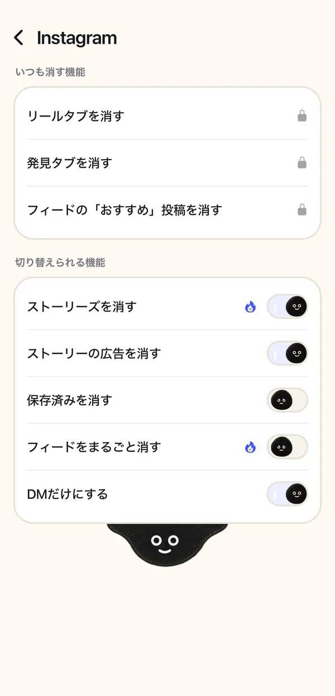

友だちから DM で届いたリールを、リールのフィードにはまらずに見る方法（iPhone・2026年）
インスタのアプリには大人のアカウントでリールのタブを消す設定が無く、DM で届いたリールを開くとリールの画面で再生されて、そこから次のリールへ進めてしまうことがありますが、minulo の中でインスタを開けば、DM から開いたリールは縦に流れるフィードが始まる前で止まり、見たいときだけ「5分だけ開く」で5分間見られます。リールを消すのは無料で、DM もグループの DM もそのまま使えます。
インスタのアプリでは、チャットから開いたリールの画面で上にスワイプすると、次のリールが続くことがあります（この動きは Instagram のヘルプでは確かめられませんでした）。インスタごと止めると、DM も使えなくなります。届いたものだけ見て終わりにしたいなら、minulo で Instagram を開きます。DM で届いたリールやショートを開くと、縦に流れるフィードが始まる前で止まり、「5分だけ開く」を押すと5分間だけ見られます。5分たつと、自動でまた止まります。
- minulo を入れ、その中でインスタを開きます。インスタのログイン画面でログインします。
- インスタの横の歯車をタップし、［リールタブ］をオンにします。リールを消すのは無料です。
- 友だちからリールが届いたら、いつもどおりチャットから開きます。リールのフィードが始まる前で止まります。
- 見たいときは「5分だけ開く」を押します。5分たつと、自動でまた止まります。
このページは minulo の開発者、北林 歩が書いています。minulo については FAQ とサポートページ、ほかのアプリについては米国の App Store のページを、2026年10月に確かめました。DM から開いたリールがどう続くかは、Instagram のヘルプでは確かめられませんでした（2026-11-14）。メニューの名前は、アプリの更新で変わることがあります。
| 方法 | 友だちから届いたリール | リールのフィード |
|---|---|---|
| インスタのアプリ | 再生される。スワイプで次のリールへ進めることがある | いつもある |
| スクリーンタイムでインスタに時間制限 | インスタごと止まり、DM も使えない | 止まる |
| SocialLite | その1本は見られるが、次へはスクロールできない（App Store の説明より） | 消える |
| minulo | フィードが始まる前で止まる。「5分だけ開く」で見られる | ［リールタブ］で消える |
届いたリールが入り口になる
自分からリールを開くつもりはなくても、友だちがチャットにリールを送ってきて、返事をしようと開いたら次のリールがもう流れている、ということがあります。インスタごと止めても解決しません。残したいのはそのチャットのほうだからです。効くのは、届いた1本と、その後ろに続くフィードの間に区切りを入れることです。
minulo での設定
- minulo を入れ、その中で Instagram を開きます。Instagram のログイン画面でログインするので、パスワードは minulo には届きません。
- Instagram の横の歯車をタップし、［リールタブ］をオンにします。発見も消したいなら［発見タブ］もオンにします。
- 友だちからリールが届いたら、いつもどおりチャットから開きます。フィードが始まる前で止まるので、見たいときは「5分だけ開く」を押します。
- 必要なら、公式の Instagram アプリをスクリーンタイムで止め、アイコンを押すと minulo に移るようにします。止めるのは1回2時間まで無料です。

メッセージだけにしたいときは［DM以外のタブ］をオンにすると、DM とお知らせのタブだけが残ります。リール・発見・おすすめ投稿を消すのは無料です。
minulo の弱いところも書いておきます。公式アプリそのものは変えられないので、リールやショートが消えるのは minulo の中だけです。minulo が公式アプリを止めている間は、そのアプリの通知は届かず、minulo が代わりに通知を送ることもありません。ただし 1.0.19 からは、Pro の方はベータ機能の DM の通知をオンにすると、Instagram を止めている間も Instagram の DM の通知だけは届きます（スリープモード・ワークモードの間と、1日の上限に達した後は届きません）。ストーリーズの投稿・音声メッセージ・通話は、各SNSのウェブ版に無いので使えません。使えるのは iPhone と Mac（Mac 版は Safari と Chrome で使える）で、Android 版はまだありません。公開されたばかりで、評価もまだ少ないです。くわしくは minulo にできないことへ。
DM で届いたリールを、リールのフィードにはまらずに見る方法は？
インスタのアプリには大人のアカウントでリールのタブを消す設定が無く、DM で届いたリールを開くとリールの画面で再生されて、そこから次のリールへ進めてしまうことがありますが、minulo の中でインスタを開けば、DM から開いたリールは縦に流れるフィードが始まる前で止まり、見たいときだけ「5分だけ開く」で5分間見られます。リールを消すのは無料で、DM もグループの DM もそのまま使えます。
リールのタブなしで、友だちから届いたリールは見られる？
見られます。minulo ではリールと発見のタブを消したまま、DM から開いたリールはフィードの前で止まります。「5分だけ開く」を押せば見られます。
インスタで次のリールが流れないようにするには？
インスタのアプリでは、大人のアカウントはリールのタブを消せず、チャットから開いたリールの画面から次のリールへ進めてしまうことがあります。minulo で Instagram を開けば、DM から開いたリールはフィードの手前で止まります。SocialLite も、その1本は見られて次へはスクロールできないと説明しています。
5分たったらどうなる？
自動でまた止まります。もう一度見たいときは、また「5分だけ開く」を押します。
DM で届いた YouTube のショートも同じ？
同じです。minulo は、DM で届いたリールもショートも、縦に流れるフィードが始まる前で止めます。
グループの DM は使えなくなる？
使えます。minulo の中で DM もグループもそのまま使えます。公式アプリを止めている間は、そのアプリの通知は届きません。ただし 1.0.19 からは、Pro の方はベータ機能の DM の通知をオンにすると、Instagram を止めている間も Instagram の DM の通知だけは届きます（スリープモード・ワークモードの間と、1日の上限に達した後は届きません）。
出典